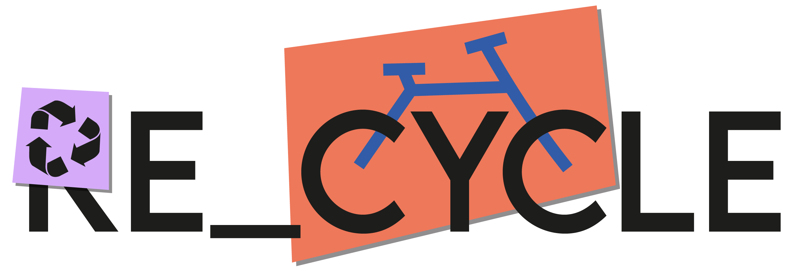
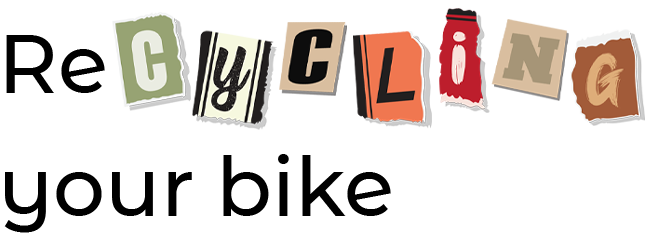

Maar wat houdt dat nou precies in? En waarom zou je dat doen? En waar?
Op deze website kom je er alles over te weten! Dit is Re_cycle, de website die jou alles vertelt over het recyclen van fietsen.
Wist je dat er in Nederland jaarlijks 1 miljoen fietsen worden weggegooid? Dit is natuurlijk zonde, want een fiets kan nog prima een tweede leven hebben.

Re_cycle is een bedrijf dat zich bezig houdt met het recyclen van fietsen. Zo wordt de wereld een stukje beter door fietsen te recyclen en deze weer te verkopen, waardoor er minder fietsen op de schroothoop belanden en er minder nieuwe fietsen hoeven te worden gemaakt!